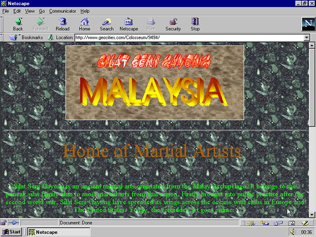
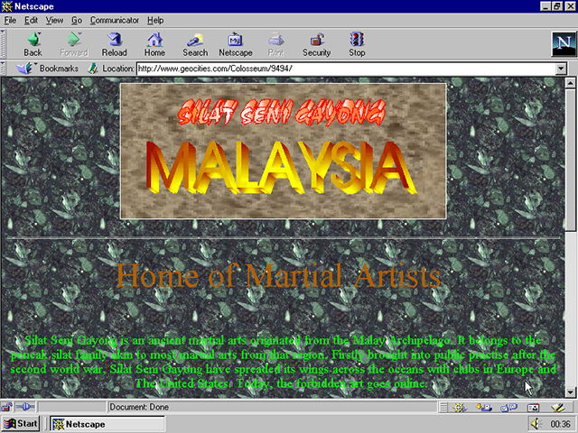
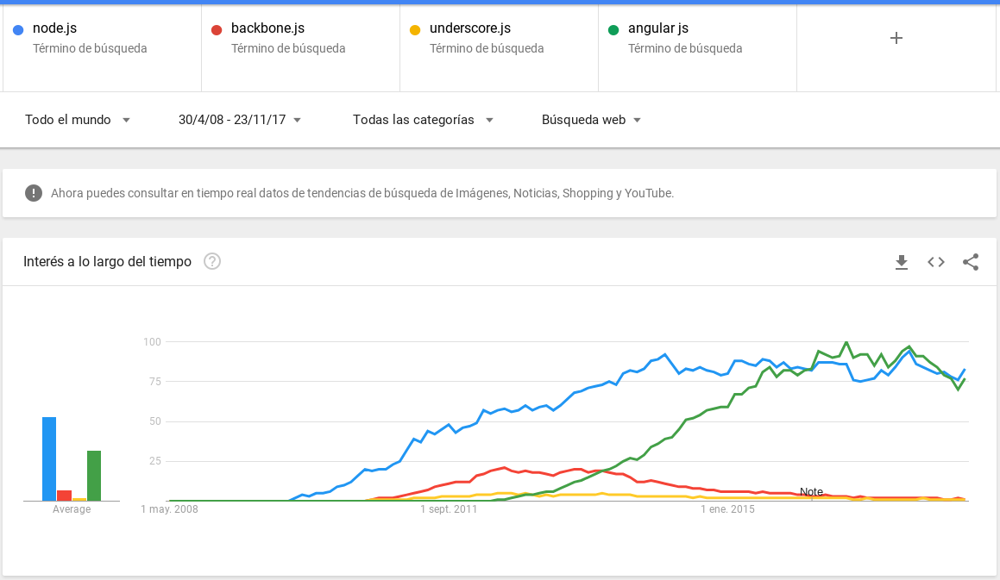
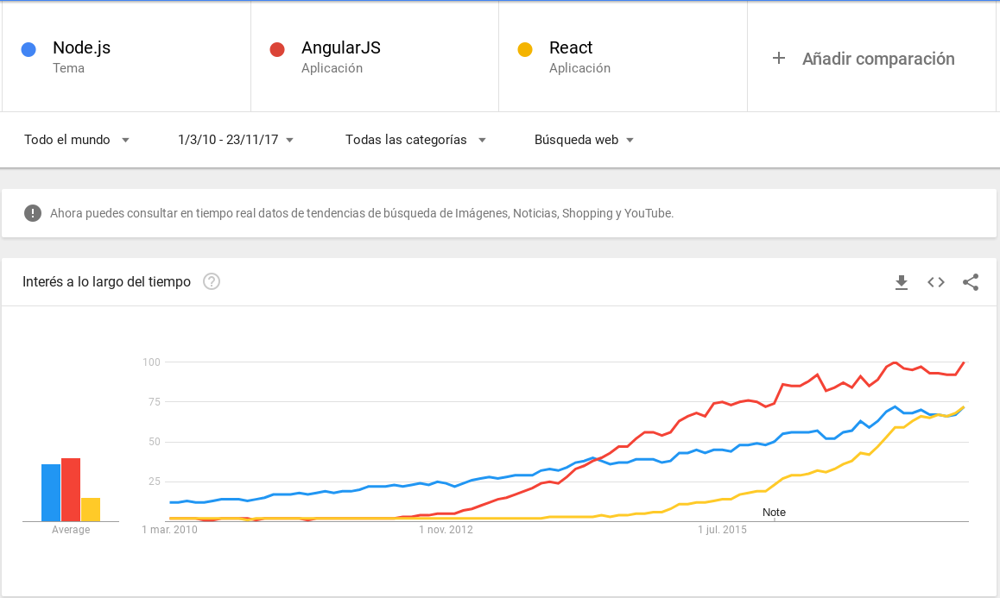
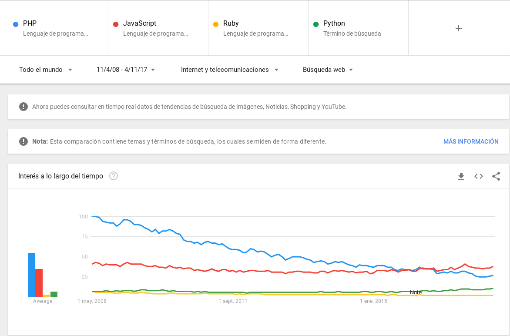
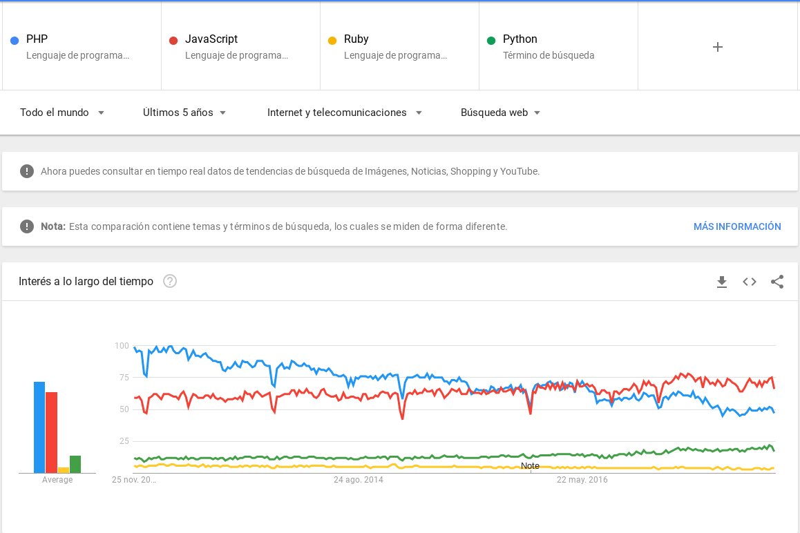
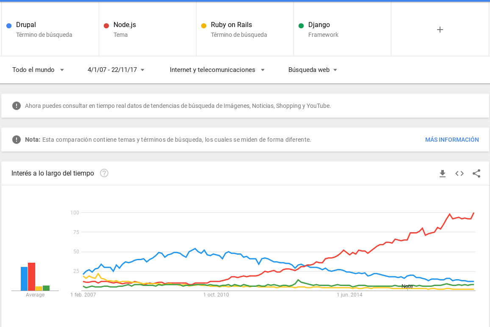
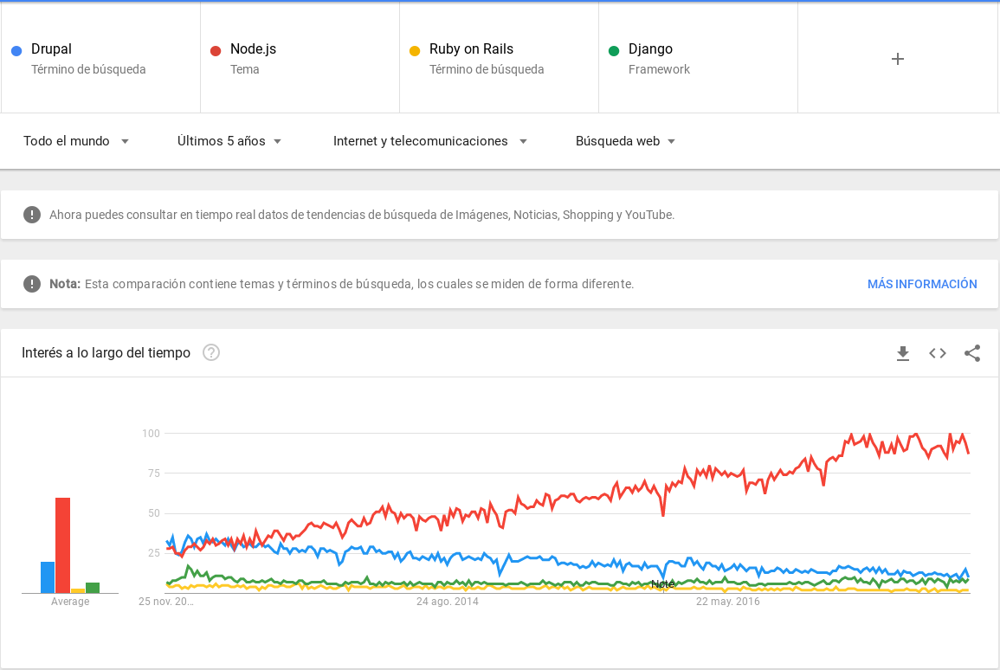

Embracing the change, adapting to web development evolution
DrupalCamp São Paulo, November 25th, 2017
Who is?
@betoscopio

- Studied Computer Science
- Inspired by Free Software movement
- Started with Drupal in 2010
- Currently working at ECLAC
From Chile
Who is?
@betoscopio
- Me, sometime ago
- While you travel you see diferent realities
- What you are used to, most of the times is not the "normal thing"
My Drupal Learing Path
- Found Drupal, because I wanted clean HTML code
- Teached Drupal myself
- DrupalCon SF 2010 (D6)
- I met another Drupaler about a year later for first time
The Drupal Community
- Wanted to know other Drupalers
- So started to to talk with other Latin American drupaleros
- Started with regular meetings
- First Drupal Event Drupal Summit Latino 2013 (Ecuador)
DrupalCamp Santiago de Chile 2015
Embracing the change
Heraclitus of Ephesus (~500 BC)
Everything changes and nothing stands still.
All is flux, nothing stays still.
No man ever steps in the same river twice.
All things . . . are in flux like a river. Heraclitus’s insistence on the process of change as fundamental to the world poses a question to us when we are facing difficult changes that we might want to deny or resist. By insisting that something or someone stay the same, could it be that we are destroying the very thing we wish to preserve? In any particular case, when we are resisting change, we might ask ourselves, is this like trying to stop a river’s waters from flowing?
Web development evolution
 

Self-managing websites (autoadministrables)
- First Web Systems
- Client/Server applications
- Visual Basic, ActionScript
- ASP
- Java J2EE, JSF
- Web "recomendations"
The LAMP Golden Age
- CMS disrruption
- Mambo (Joomla)
- Wordpress 1.x
- Drupal 4.x
- Media Wiki
- Complex web applications
- Google Maps, Facebook → Ajax
Here comes the Ruby
- Ruby on Rails
- The RoR effect
- ORM, Scaffolding, Relection, "Real OOP"
- Dozens of PHP clones
- Did somebody said hype?

Douglas Crockford (May 2008)
The new cool kid in the block
Javascript projects trends
Language trends 2008-2017
Language trends 2012-2017
The "I Hate PHP" is cool era
PHP the Right Way
Node.js
Hype already?
Projects trends 2007-2017
Projects trends 2012-2017
The Rise of Microservices
Changes in infraestructure
In the beginning there was the FTP server
- FTP Uploads
- The WAMP Server
- ... yes that means a production server with Apache + Windows
The shared services era
- Shared Hosts: Dreamhost, GatorHost, BlueHost ...
- "We only use PHP 4"
- VPS
- Virtualization
Here comes the Cloud


Platfform as a Service (PASS)


About Drupal
- drop.org → 2000
- Drupal 1 - 3 → 2001
- Drupal 4.0.0 → 2002
- Drupal 4.1.0, 4.2.0, 4.3.0 → 2003
- Drupal 4.4.0, 4.5.0 → 2004
- Drupal 4.6.0 → 2005
- Drupal 4.7.0 → 2006
- Drupal 5.0 → 2007
- (Go PHP5 campaign → 2007)
- Drupal 6.0 → 2008
- Drupal 7.0 → 2010
About Drupal
Getting off the Island.
- Drupal 8.0.0 → 2015
- Drupal 8.1.0, 8.2.0 → 2016
- Drupal 8.3.0, 8.4.0 → 2017
Drupal is ambitious digital experiences
 Future: https://dri.es/acquia-engage-2017-keynote
Future: https://dri.es/acquia-engage-2017-keynote
Team work organization
- In the beginning there was the Webmaster
- The "programmer" + the "designer"
- Programmer + designer + editor
- The IT guy(s) + developer + editor + project manager
- The infraestructure team + backend developer + front end developer + QA team + editorial team + project manager(s) + marketing team
The "Full Stack Developer"
The "Full Stack Developer"

Let there be web divisions

Jeffrey Zeldman, July 2007
My Team Is New to Drupal: What Should I Know?
by Carlos Ospina, DrupalCamp Costa Rica 2017
The "Future" is now
... somewhere
Crockford on JavaScript - Volume 1: The Early Years
"Good ideas took time to become mainstream..."
How to adapt?
Be an agent of change
If it doesn't work
... try it a couple of more times,
at least.

- Always look arround
- Everything you know is changing
- Learn to adapt
- Shape your environment or move on
The world is smaller
... be part of something bigger.
Obrigado
@betoscopio